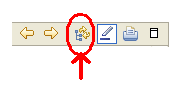

|
Voor dit vak maken we gebruik van DB2 Version 9.5 for Linux, UNIX, and Windows. Hou dit in het achterhoofd als je extra informatie wil opzoeken. Deze tutorials zijn gebaseerd op de DB2 9.5 handleidingen die men in pdf formaat kan raadplegen
hier
en in html formaat
hier. We raden aan om vooral de html versie te gebruiken omdat deze informatie eenvoudiger navigeerbaar is via html links en mogelijk ook meer recent is.
In deze inleiding tot enkele technische aspecten van DB2 development geven we vaak links naar pagina's in
de html versie. Het is hierbij nuttig om te weten waar de aangeduide html pagina's zich bevinden
in de hiërarchische indeling van deze handleiding. Het is mogelijk de  We raden aan om zelf een beetje vertrouwd te geraken met de hoofdstukken uit deze handleiding waarnaar wij verwijzen zodat je er zelfstandig in kan navigeren indien je meer technische uitleg wilt over een bepaald onderwerp. Natuurlijk mag je je daarbij beperken tot de topics die nuttig zijn voor de oefeningen. |
|
|
Hieronder staan enkele links binnen onze eigen website waarop nuttige praktische informatie staat om de oefeningen te kunnen maken:
|
|